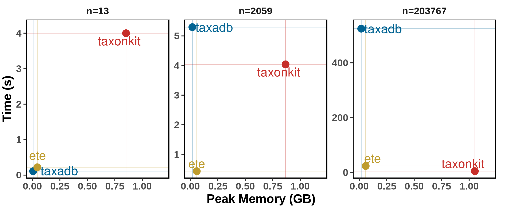

Benchmark
Data set
-
NCBI taxonomy, version 2021-01-21
-
TaxIDs. Root node
1is removed. And These data should be updated along with NCBI taxonomy dataset, becausetaxadbdoes not handle merged taxiIDs.-
small.txt (n=20)
cut -f 1 nodes.dmp | csvtk sample -H -p 0.00002 \ | grep -w 1 -v | head -n 20 > taxids.small.txt -
medium.txt (n=2,000)
cut -f 1 nodes.dmp | csvtk sample -H -p 0.002 \ | grep -w 1 -v | head -n 2000 > taxids.medium.txt -
big.txt (n=200,000)
cut -f 1 nodes.dmp | csvtk sample -H -p 0.1 \ | grep -w 1 -v | head -n 200000 > taxids.big.txt
-
Softwares
- Loading database from local database:
- Directly parsing dump files:
Not used tools without direct function of getting full lineage
Environment
- OS: Linux 5.4.89-1-MANJARO
- CPU: AMD Ryzen 7 2700X Eight-Core Processor, 3.7GHz
- RAM: 64GB DDR4 3000MHz
- SSD: Samsung 970EVO 500G NVMe SSD
Installation and Configurations
-
ETE
sudo pip3 install ete3 # create database # http://etetoolkit.org/docs/latest/tutorial/tutorial_ncbitaxonomy.html#upgrading-the-local-database from ete3 import NCBITaxa ncbi = NCBITaxa() ncbi.update_taxonomy_database() -
taxadb
sudo pip3 install -U taxadb # create database # https://github.com/HadrienG/taxadb#creating-the-database taxadb download --type taxa -o ~/.taxadb -f taxadb create -i ~/.taxadb --division taxa --dbname ~/.taxadb/taxadb.sqlite -
taxopy
sudo pip3 install -U taxopy # taxoopy identical dump files copied from taxonkit mkdir -p ~/.taxopy cp ~/.taxonkit/{nodes.dmp,names.dmp} ~/.taxopy
Scripts and Commands
Scripts/Command as listed below. Python scripts were written following to the official documents, and parallelized querying were not used, including TaxonKit.
ETE get_lineage.ete.py < $infile > $outfile
taxadb get_lineage.taxadb.py < $infile > $outfile
taxopy get_lineage.taxopy.py < $infile > $outfile
taxonkit taxonkit lineage --threads 1 --delimiter "; " < $infile > $outfile
A Python script memusg was used
to computate running time and peak memory usage of a process.
A Perl scripts
run.pl
is used to automatically running tests and generate data for plotting.
Running benchmark:
$ # emptying the buffers cache
$ su -c "free && sync && echo 3 > /proc/sys/vm/drop_caches && free"
# 43min for me...
time perl run.pl -n 3 run_benchmark.sh -o bench.get_lineage.tsv
Checking result:
$ md5sum *.lineage
4d89c6cafa9e5fc75b3166d9cc1fd9c7 taxids.big.txt.ete.lineage
4d89c6cafa9e5fc75b3166d9cc1fd9c7 taxids.big.txt.taxadb.lineage
4d89c6cafa9e5fc75b3166d9cc1fd9c7 taxids.big.txt.taxonkit.lineage
4d89c6cafa9e5fc75b3166d9cc1fd9c7 taxids.big.txt.taxopy.lineage
4ef1d6afd94f8d5034ad46670610bfda taxids.medium.txt.ete.lineage
4ef1d6afd94f8d5034ad46670610bfda taxids.medium.txt.taxadb.lineage
4ef1d6afd94f8d5034ad46670610bfda taxids.medium.txt.taxonkit.lineage
4ef1d6afd94f8d5034ad46670610bfda taxids.medium.txt.taxopy.lineage
c2596fc28068b7dad4af59309c7b8d12 taxids.small.txt.ete.lineage
c2596fc28068b7dad4af59309c7b8d12 taxids.small.txt.taxadb.lineage
c2596fc28068b7dad4af59309c7b8d12 taxids.small.txt.taxonkit.lineage
c2596fc28068b7dad4af59309c7b8d12 taxids.small.txt.taxopy.lineage
# clear
$ rm *.lineage
# rm *.out
Note that taxonkit returns "root" for taxid 1, while the others return nothing.
Plotting benchmark result.
R libraries dplyr, ggplot2, scales, ggthemes, ggrepel are needed.
# reformat dataset
# tools: https://github.com/shenwei356/csvtk/
for f in taxids.*.txt; do wc -l $f; done \
| sort -k 1,1n \
| LC_ALL=en_US.UTF-8 awk '{ printf("%s\tn=%'"'"'d\n",$2,$1) }' \
> dataset_rename.tsv
cat bench.get_lineage.tsv \
| csvtk sort -t -L dataset:<(cut -f 1 dataset_rename.tsv) -k dataset:u \
| csvtk replace -t -f dataset -k dataset_rename.tsv -p '(.+)' -r '{kv}' \
> bench.get_lineage.reformat.tsv
./plot.R -i bench.get_lineage.reformat.tsv --width 8 --height 3.3
# ./plot.R -i bench.get_lineage.reformat.tsv -o bench.get_lineage.reformat.tsv2.png --dpi 600 --width 8 --height 3.3
Result
